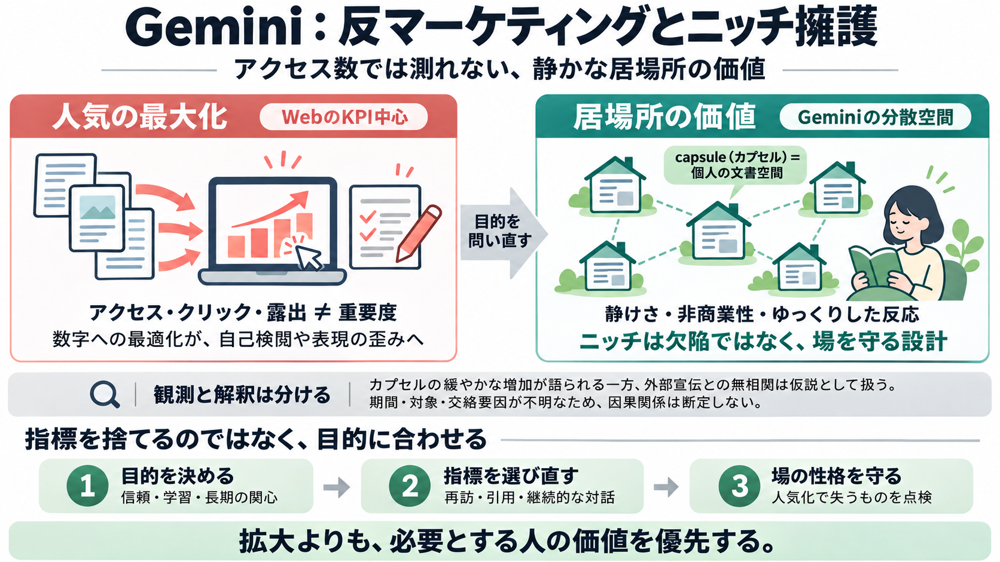

Gemini Protocol: A Human-Centric Alternative to the AI-Driven Web | NicFab Blog
Among the most popular servers in 2026 stands Agate, ideal for Docker-based self-hosting in the privacy-focused communit…

アクセス数や露出で“正しさ”を測る発想をいったん外し、静かな分散空間がなぜ成り立つのかを整理します。
WebのKPI（アクセス数・クリック数・露出）は、作り手の価値を測りにくく、人気獲得の最適化が表現を変えてしまう—という問題提起です。
GeminiネットワークはHTTPのWebと別の分散型の文書体系で、個人の空間（capsule／カプセル）が“静かに”存在します。
健全性の観測として、新しいcapsuleが“ゆっくり”増えていることが挙げられます。
重要な点として、ある月のcapsule新規増加と、Hacker NewsなどでのGeminiプロトコル宣伝の強さに“相関がない”と強調されます。
Geminiの価値は、ニュース性や即時のドーパミン（即時報酬）よりも、「そういう静けさが欲しい人の居場所」を優先し得る点にあります。
マーケ的な成果指標に合わせると、文章の本質が“人気化”へ寄ってしまう—という懸念が中心です。
Geminiが“ニッチ”なのは欠陥ではなく、「万人向けにしないことで静けさが保たれる」という意図された性質だ、という結論です。
記事と補助意見から、判断材料を“観測・指標・歪み・設計”に整理します。
capsule増加とHacker News宣伝の“無相関”や「操作」の可能性は、定義・期間・データ取り方が明確でないため、断定より仮説として扱うのが安全です。
記事を“旗”として読むだけでなく、自分が何を最適化したいか（長期の信頼か、短期の反応か）を問い直す教材として活用します。
Geminiの“反マーケティング”性は、拡大や指標最適化ではなく、静かな空間を必要とする人にとっての価値を優先する、という発想にあります。
Among the most popular servers in 2026 stands Agate, ideal for Docker-based self-hosting in the privacy-focused communit…
"Geminispace" denotes the whole of the public resources that are published on the Internet by the Gemini community via t…
Prominent AI companies such as Anthropic and OpenAI have been forthcoming about their models’ tendency to go “rogue,” wh…
# Hacker News ID: DOqPDJ6Rl25D Website: www.hackernews.in Headquarters: Buffalo, New York, United States LinkedIn: www.l…
WatchlistPortfolio Q1: Who are the Gemini creditors mentioned in this case? A1: The Gemini creditors are users of Gem…